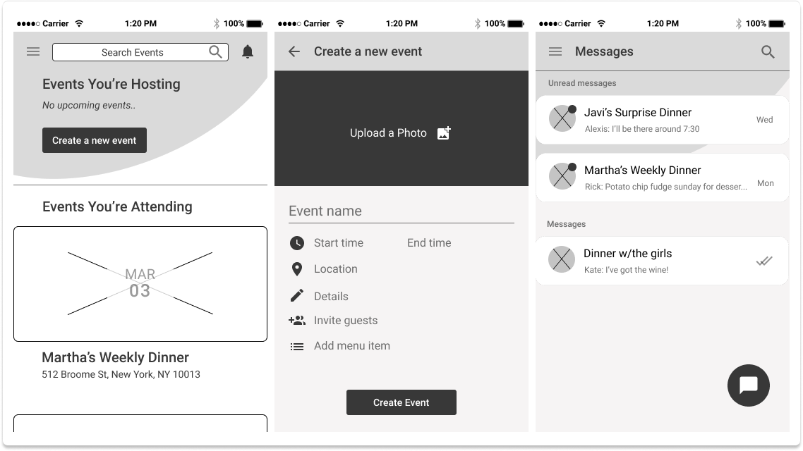
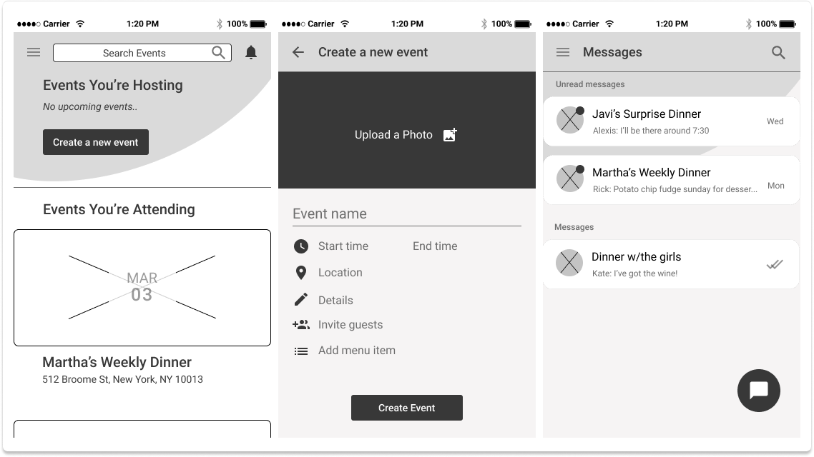
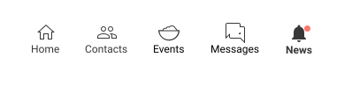
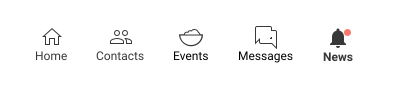
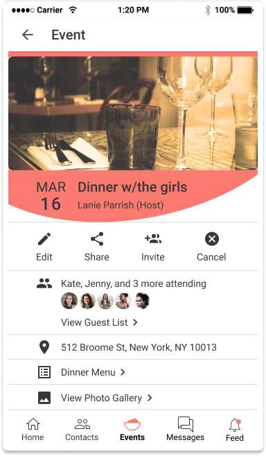
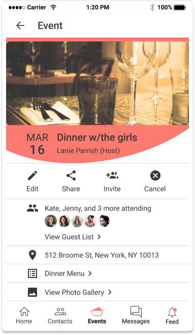

This was the first full-scale design project I completed during my apprenticeship with Bloc. We were given the challenge to create an application with no specifications or contraints except that the solution had to include features of organization, collaboration, sharing, and storing information.
While brainstorming ideas for this assignment, it just so happened that at the time a friend and I were struggling with managing all the details to plan an intimate dinner event and voila, the project was born!
UX Research, Content Strategy, UI Design, User Testing
User surveys, Competitive analysis, User personas, User stories, User flows, Wireframes, High-fidelity mockups, Clickable prototypes
Adobe Photoshop, Figma, UsabilityHub, GitHub, Zoom
2 months
It's 2019 and the ever-elusive work-life balance is a myth that fuels the dreams of young millenials and working professionals. If it's not easy to use, accessible, or simple then it's not worth your time.
People are currently struggling to planning dinner events, often resorting to using multiple cloud storage platforms to manage all of their data.
They need to find an easier way to store and access event planning and information data.
Let's eat gives users a solution for storing various types of data such as event information, invitee contacts, and event location data all in one place.
This eliminates the need for a user to search through or use multiple applications for different event planning information.
Given the inexpensive nature of online user surveys, the ease of accessbility, and the quick response time, I decided to conduct a user survey in order to find out more users' event planning behaviors.
Key factors that I wanted to examine were the different types of data files users interacted with, popular features, and user needs and frustrations.
Keeping in mind the key takeaways from the user survey, I conducted a competitive analysis between the most popular platforms. features similar to what potential users stated they wanted to see in the app.

Based on the the key discoveries from the user survey and competitive analysis, I created three tiers of potential user personas that covered the spectrum of involvement: low, medium, and high.
Tier: Low Involvement
Age: 24
Occupation: Student
Location: Austin, TX
"School's hard until you graduate, and then you realize life's even harder."
A graduating senior in college, Kevin's worried about landing that first job and struggling to make rent.
He's always on the move and doesn't have the patience or time to search for contact information for events.

Tier: High Involvement
Age: 27
Occupation: ER Nurse
Location: Houston, TX
"Helping people get better is worth all the skipped meals and lost sleep."
Getting through 12-hour shifts is Carmen's first priority, food and sleep are a close second.
When she's not working, she likes to lounge around and catch up with current events.
Based on previous research and user personas, I came up with different user stories for the application and ranked them based on importance. These are the tasks with the highest importance and the ones deemed necessary for a MVP (minimum viable product).


Create an account flow

Contact event guests, upload photos, and edit event details flows

Create an event and invite contacts flows
In my first iteration, I needed to map out screens that included the following content:


Dashboard, create event, and create message screen initial sketches
Using the sketches above, as well as other influences of popular applications, we created our first iteration of digital wireframes.
Some screen inspirations came from Facebook, Eventbrite, and Twitter.
 

Digital wireframes of dash, create event, and message screens
During the first round of user testing, we received valuable feedback that we used to improve our designs for the second round of iterations.


Our journey to the perfect logo and color scheme really began with the desire to make a complicated process (dinner planning) simpler.
Since the application specifically caters to dinner planning, we wanted the logo to be very universal and easily relatable to the act of eating or dining.
Brainstorming logo iterations
While searching for the right color for this brand, we wanted to find something that embodied the millenial struggle and something that appealed to young professionals - fun, reliable, and vibrant.
Pantone says that Living Coral "symbolizes our innate need for optimism and joyful pursuits - a feeling that, perhaps, people might be craving in today's landscape".
Staying true to the intended nature of the app - being simple to use, it made the most sense to go with a monochromatic color scheme to let the vibrancy of the Living Coral shine through.
For that reason, we decided to pair the coral with warm grays and a soft black.
Deciding to use Roboto as a font type was a no-brainer. It is a popular sans-serif font that many users recognize and has 12 styles within the font family alone. This eliminates the need to pair it with another font to create contrast when needed.

The first preference test was for the label name for the “Feed” tab. Some users mentioned that the word “feed” was too similar to the home page in connotation.
There were two proposed label names put forth for testing - Activity and News.
 

89% of testers preferred the label "Activity" instead of "News" and some reasons were that:
"The word 'News' can carry a more serious connotation, like a feed of current events or trending topics - things outside the scope of notifications"
"Activity sounds more personal than 'News'"
The next preference test was for the addition of small profile icons of guests that are attending an event versus an event home page with just a link to view the guest list.
 

88% of testers preferred an event homepage with the added profile icons, stating that:
"I like having visuals of who is coming to the event"
"My eyes are drawn to the avatars"
"Seeing real people's pictures can help drive the RSVPs"
In the first high fidelity mockup for the event page, there was an idea to maintain a sense of movement within the app by adding an organic circular shape to the top of the screen which can be seen in many other screens throughout the app.
After consulting with other team members and conducting some user tests, we decided to remove the solid shape as it seemed to create a feeling of separation within the content on the page. Instead, we used the circular shape as a mask for the event hero photo, therefore still incorporating an organic sense of movement within the page without the added distraction.

Event page iterations 1-3

In the early versions of this app, user testing revealed that the hamburger side menu might not be as intuitive for users who are not familiar with the feature.
As a way to remedy this, we added a quick on-boarding overlay that informs the user of the existence of a side-menu when they first create an account.
We also removed menu options that felt out of place being in the side menu such as “Invite Contacts” and “Sync Calendar”.

Side menu iterations 1-3
Being the sole designer responsible for the entirety of a project from conception to delivery took herculean efforts and meant letting go of a lot of perfectionistic tendencies.
The journey of let’s eat is a tale fraught full of scope creep issues, questions about logo branding and identity, and endless iteration in order to solve the problem of the difficulties associated with dinner planning. Users liked how clean the UI looked and navigating the application was very intuitive.
Given more time and love, this application would likely explore features such as external calendar syncing and the ability to create to-do lists and assigning tasks to event attendees.